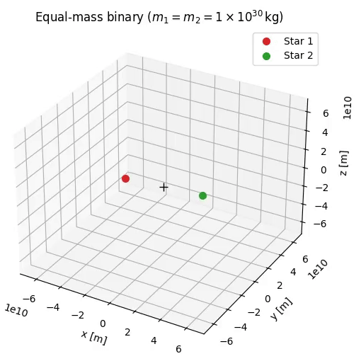

2 Two Body Problem
2.1 Equations of Motion for the Two body problem
Let \(\vec{R}_1\) and \(\vec{R}_2\) denote the position vectors of masses \(m_1\) and \(m_2\) in an inertial reference frame. According to Newton’s Second Law and the law of gravitation:
\[ m_1\ddot{\vec{R}}_1=-G\frac{m_1 m_2}{r^3} \vec{r} \tag{2.1}\]
\[ m_2\ddot{\vec{R}}_2=G\frac{m_1 m_2}{r^3} \vec{r} \tag{2.2}\]
where \(\vec{r}= \vec{R}_2-\vec{R}_1\) the relative position vector between the two masses.

2.1.1 Derivation of the relative equation of motion
Substituting Equation 2.1 and Equation 2.2 to \(\vec{r}= \vec{R}_2-\vec{R}_1\):
\(\ddot{\vec{r}}= -G\frac{m_1 m_2}{r^3}\vec{r}\left(\frac{1}{m_2}+\frac{1}{m_1}\right)= -G \frac{m_1+m_2}{r^3} \vec{r}\)
Let the gravitational ùúá parameter be defined as:
\[ \mu= G(m_1+m_2) \]
Hence the final equation that we use turns out to be:
\[ \boxed{\ddot{\vec{r}}=-\frac{\mu}{r^3}\vec{r}} \tag{2.3}\]
2.1.2 Motion of Center of Mass
The center of mass vector is: \(\vec{R}_G=\frac{m_1\vec{R}_1+m_2\vec{R}_2}{m_1+m_2}\)
Using Equation 2.1 and Equation 2.2 :
\[ \ddot{\vec{R}}_G= \frac{m_1\ddot{\vec{R}}_1+m_2\ddot{\vec{R}}_2}{m_1+m_2} \tag{2.4}\]
\[ \ddot{\vec{R}}_G=\frac{-G\frac{m_1m_2}{r^3}\vec{r}+G\frac{m_1m_2}{r^3}\vec{r}}{m_1+m_2}=0 \]
Hence proved that the acceleration of center of mass is zero.
2.2 Angular momentum in two body problem
The angular momentum of body \(m_2\) relative to \(m_1\) is moment of \(m_2\)’s relative linear momentum \(m_2 \dot{\vec{r}}\):
\[ \vec{H}_{2/1}= \vec{r} \times m_2\dot{\vec{r}} \]
where \(\dot{\vec{r}}\) is the velocity of \(m_2\) relative to \(m_1\). We divide this equation of the mass term and get the specific relative angular momentum:
\[ \vec{h}= \vec{r}\times\dot{\vec{r}} \]
On calculating the time derivative:
\[ \frac{d\vec{h}}{dt}=\dot{\vec{r}}\times\dot{\vec{r}}+ \vec{r}\times \ddot{\vec{r}} \]
From the Equation 2.3, we see that \(\ddot{\vec{r}} \parallel \vec{r}\) . Hence \(\frac{d\vec{h}}{dt}=0 \Rightarrow \vec{h}\) is conserved.
2.2.1 Eccentricity of orbit from Laplace-Runge-Lenz vector
Differentiating \(\dot {\vec r} \times \vec h\):
\[ \frac{d}{dt}(\dot{\vec r}\times\vec h)= \ddot{\vec r}\times\vec h + \dot{\vec r}\times\underbrace{\dot{\vec h}}_{0}= -\frac{\mu}{r^{3}}\vec r\times(\vec r\times\dot{\vec r}) \tag{2.5}\]
Using the triple product identity \(\vec{a}\times(\vec{b}\times\vec{c})=(\vec{a}\cdot\vec{c})\vec b-(\vec a \cdot \vec b)\vec c\) :
\[ \vec r\times(\vec r\times\dot{\vec r})= (\vec r\cdot\dot{\vec r})\vec r - r^{2}\dot{\vec r} \]
And using the identity \(\vec r \cdot \dot{\vec r}=r\dot r\), we get:
\[ \vec r\times(\vec r\times\dot{\vec r})= (r\dot r)\vec r - r^{2}\dot{\vec r} \tag{2.6}\]
We know that:\[\vec r \cdot\vec r=r^2\]
Then:\[\frac{d}{dt}(\vec r\cdot \vec r)=2r\frac{dr}{dt}=2r\dot r \]
But,\[\frac{d}{dt}(\vec r \cdot \vec r)=\vec r\cdot \frac{d\vec r}{dt}+\frac{d\vec r}{dt}\cdot \vec r=2\vec r\cdot \frac{d\vec r}{dt}=2\vec r\cdot \dot{\vec r}\]
Hence:\[ \boxed{\vec r\cdot\dot{\vec r}=r\dot r} \]
Inserting Equation 2.6 into Equation 2.5 :
\[ \frac{d}{dt}(\dot{\vec r}\times \vec h)=- \frac{\mu}{r^3}\left[(r \dot{r})\vec r - r^2 \dot{\vec r}\right]=-\mu \left[\frac{\dot r \vec r-r\dot{\vec{r}}}{r^2}\right] \tag{2.7}\]
But ,
\[ \frac{d}{dt}\left(\frac{\vec r}{r}\right)= \frac{r\dot{\vec r}-\dot r\vec r}{r^2}=-\frac{\dot r\vec r-r\dot{\vec{r}}}{r^2} \]
substituting the above into Equation 2.7;
\[ \frac{d}{dt}\left(\dot{\vec r}\times \vec h\right)= \frac{d}{dt}\left(\mu\frac{\vec r}{r}\right) \]
Which on integration, gives this solution:
\[ \frac{1}{\mu}(\dot{\vec{r}}\times \vec h)-\frac{\vec r}{r}=\vec e \tag{2.8}\]
where \(\vec e\) is the constant of integration and called as the Laplace-Runge-Lenz Vector. The significance of this vector is that its magnitude \(|\vec e|\) gives the eccentricity \(e\) and it faces in the direction of the periapsis of the orbit.
2.3 Orbit Equation (Trajectory Under Gravity)
Equation 2.8 is the vector equation that represents the orbit of one of the bodies wrt the other in the two body problem. In order to obtain the scalar form, we take a dot product with \(\vec r\):
\[ \frac{1}{\mu}(\dot{\vec{r}}\times \vec h)\cdot \vec r-\frac{\vec r\cdot \vec r}{r}=\vec e\cdot \vec r \]
Using the identity \(\vec a \cdot (\vec b \times \vec c)=(\vec a \times \vec b)\cdot \vec c\);
\[ \frac{1}{\mu}\underbrace{(\vec r \times \dot{\vec r})}_{\vec h}\cdot \vec h- \frac{\vec r\cdot\vec r}{r}=\vec e\cdot\vec r \]
\[ \frac{h^2}{\mu}-r=re\cos{\theta} \text{ where } \theta \text{ is the true anomaly angle } \]

Hence the final equation of orbit will turn out to be as follows:
\[ \boxed{r=\frac{\frac{h^2}{\mu}}{1+e\cos{\theta}}} \]
2.4 Two body problem simulation
Below is a simulation of the two body problem with an example: a binary star system of two Suns whose masses are equal.
Click to view the code
import numpy as np
import matplotlib.pyplot as plt
from mpl_toolkits.mplot3d import Axes3D # noqa: F401 (needed for 3-D plots)
from matplotlib.animation import FuncAnimation, FFMpegWriter#, PillowWriter # (optional, for GIFs)
import os
# -------------------- physical constants --------------------
G = 6.67430e-11 # SI [m^3 kg^-1 s^-2]
# -------------------- helper functions ----------------------
def orbital_velocity(mu, r, a=None, e=0.0):
"""
Magnitude of the relative velocity for the chosen orbit.
mu = G*(m1+m2)
r = current separation
a = semi-major axis (None -> circular orbit with radius r)
e = eccentricity
Returns scalar speed v.
"""
if a is None: # circular orbit
a = r
return np.sqrt(mu * (2.0/r - 1.0/a))
def set_initial_conditions(m1, m2, r_periapsis, e=0.0, inclination=0.0,omega=0.0, Omega=0.0, random_phase=False):
"""
Build the 12-component state vector
[r1, v1, r2, v2] consistent with the desired relative orbit.
All angles in radians.
Returns y0 = [x1,y,z1, vx1,vy1,vz1, x2,y2,z2, vx2,vy2,vz2]
"""
mu = G*(m1 + m2)
# Relative orbit: choose the periapsis along the x-axis
r_rel = np.array([r_periapsis, 0.0, 0.0])
v_rel_mag = orbital_velocity(mu, r_periapsis,a=r_periapsis/(1.0 - e), e=e)
# Rotate by argument of periapsis (ω) in orbital plane
cosw, sinw = np.cos(omega), np.sin(omega)
rot_z = np.array([[cosw, -sinw, 0],[sinw, cosw, 0],[0, 0, 1]])
r_rel = rot_z @ r_rel
v_rel = rot_z @ np.array([0.0, v_rel_mag, 0.0])
# Inclination & line-of-nodes rotation
cosi, sini = np.cos(inclination), np.sin(inclination)
cosO, sinO = np.cos(Omega), np.sin(Omega)
rot_inc = np.array([[1, 0, 0],
[0, cosi, -sini],
[0, sini, cosi]])
rot_O = np.array([[cosO, -sinO, 0],
[sinO, cosO, 0],
[0, 0, 1]])
r_rel = rot_O @ rot_inc @ r_rel
v_rel = rot_O @ rot_inc @ v_rel
# Centre of mass at origin and zero total momentum
M = m1 + m2
r1 = -(m2/M) * r_rel
r2 = (m1/M) * r_rel
v1 = -(m2/M) * v_rel
v2 = (m1/M) * v_rel
y0 = np.concatenate((r1, v1, r2, v2))
return y0
# -------------------- integrator ----------------------------
def rhs(t, y, m1, m2):
"""
Derivatives for the 12-D state vector y.
Uses simple Newtonian gravity.
"""
r1 = y[:3]
r2 = y[6:9]
dr = r2 - r1
dist3 = np.linalg.norm(dr)**3
a1 = G * m2 * dr / dist3
a2 = -G * m1 * dr / dist3
dydt = np.empty_like(y)
dydt[:3] = y[3:6] # v1
dydt[3:6] = a1
dydt[6:9] = y[9:12] # v2
dydt[9:12] = a2
return dydt
def rk4_step(f, t, y, h, *args):
k1 = f(t, y, *args)
k2 = f(t + 0.5*h, y + 0.5*h*k1, *args)
k3 = f(t + 0.5*h, y + 0.5*h*k2, *args)
k4 = f(t + h, y + h*k3, *args)
return y + (h/6.0)*(k1 + 2*k2 + 2*k3 + k4)
def simulate_two_body_orbit(m1, m2,
r_periapsis,
e=0.0,
inclination=0.0,
Omega=0.0,
omega=0.0,
t_end=None,
dt=None,
frames=2000):
"""
Main user-facing routine.
m1, m2 in kg
r_periapsis in m
e, inclination, Omega, omega in radians
t_end : total integration time (s) (None -> 2 orbits)
dt : step size (s) (None -> adaptive)
frames: number of output samples
Returns dict with numpy arrays: t, r1, r2
"""
y0 = set_initial_conditions(m1, m2, r_periapsis, e,
inclination, omega, Omega)
# Estimate period for circular orbit (Kepler)
a = r_periapsis/(1.0 - e)
P = 2*np.pi*np.sqrt(a**3 / (G*(m1 + m2)))
if t_end is None:
t_end = 2*P
if dt is None:
dt = P/5000.0
t = 0.0
y = y0.copy()
times, traj1, traj2 = [t], [y[:3]], [y[6:9]]
steps = int(np.ceil(t_end/dt))
for _ in range(steps):
if t + dt > t_end:
dt = t_end - t
y = rk4_step(rhs, t, y, dt, m1, m2)
t += dt
times.append(t)
traj1.append(y[:3])
traj2.append(y[6:9])
return dict(t=np.array(times),
r1=np.array(traj1),
r2=np.array(traj2))
# -------------------- main program ---------------------------
# -----------------------------------------------------------
# Example: equal-mass binary (two Sun-like stars)
# -----------------------------------------------------------
if __name__ == "__main__":
# 1) Choose the system ----------------------------------------------------
m1 = 1.0e30 # 0.5 M☉ each (feel free to tweak)
m2 = 1.0e30
a = 1.0e11 # semi-major axis = 0.67 AU → period ≈ 200 days
ecc = 0.4 # eccentric orbit just to make it interesting
r_peri = a * (1 - ecc)
inc = 20.0 * np.pi/180 # 20° inclination
Omega = 0.0
omega = 0.0
# integrate 2 full periods so we see several loops
mu = G*(m1 + m2)
P = 2*np.pi * np.sqrt(a**3 / mu) # time period
t_end = 2*P
data = simulate_two_body_orbit(m1, m2,
r_periapsis=r_peri,
e=ecc,
inclination=inc,
Omega=Omega,
omega=omega,
t_end=t_end,
frames=600)
t = data['t'] # time array
r1 = data['r1'] # position of body 1
r2 = data['r2'] # position of body 2
r_rel = r2 - r1 # relative position vector
# 2) 3-D figure (unchanged) ----------------------------------------------
fig = plt.figure(figsize=(7, 6))
ax = fig.add_subplot(111, projection='3d')
lim = 1.05 * np.abs(r1).max()
ax.set_xlim(-lim, lim)
ax.set_ylim(-lim, lim)
ax.set_zlim(-lim, lim)
ax.set_xlabel('x [m]')
ax.set_ylabel('y [m]')
ax.set_zlabel('z [m]')
ax.set_title(r'Equal-mass binary ($m_1 = m_2 = 1\times10^{30}\,$kg)')
ax.plot([0], [0], [0], 'k+', markersize=8)
body1, = ax.plot([], [], [], 'o', color='tab:red', markersize=7, label='Star 1')
body2, = ax.plot([], [], [], 'o', color='tab:green', markersize=7, label='Star 2')
trail1, = ax.plot([], [], [], '-', color='tab:red', alpha=0.4, lw=1)
trail2, = ax.plot([], [], [], '-', color='tab:green', alpha=0.4, lw=1)
ax.legend()
max_trail = 300
# 3) Animation callbacks (same as before) ---------------------------------
def init():
body1.set_data([], [])
body1.set_3d_properties([])
body2.set_data([], [])
body2.set_3d_properties([])
trail1.set_data([], [])
trail1.set_3d_properties([])
trail2.set_data([], [])
trail2.set_3d_properties([])
return (body1, body2, trail1, trail2)
def update(frame):
body1.set_data([r1[frame, 0]], [r1[frame, 1]])
body1.set_3d_properties([r1[frame, 2]])
body2.set_data([r2[frame, 0]], [r2[frame, 1]])
body2.set_3d_properties([r2[frame, 2]])
start = 0
trail1.set_data(r1[start:frame, 0], r1[start:frame, 1])
trail1.set_3d_properties(r1[start:frame, 2])
trail2.set_data(r2[start:frame, 0], r2[start:frame, 1])
trail2.set_3d_properties(r2[start:frame, 2])
return (body1, body2, trail1, trail2)
# -----------------------------------------------------------
# Optional 3-D GIF of the relative orbit ------------------
# (body 2 as seen from body 1) -----------------------------
# -----------------------------------------------------------
fig3 = plt.figure(figsize=(6,5))
ax3 = fig3.add_subplot(111, projection='3d')
lim = 1.05*np.abs(r_rel).max()
ax3.set_xlim(-lim, lim)
ax3.set_ylim(-lim, lim)
ax3.set_zlim(-lim, lim)
ax3.set_xlabel('x [m]')
ax3.set_ylabel('y [m]')
ax3.set_zlabel('z [m]')
ax3.set_title('Body 2 as seen from Body 1')
# body-1 (fixed)
body1_rel, = ax3.plot([0], [0], [0], 'o', color='gold', markersize=7, label='body-1')
rel_pt, = ax3.plot([], [], [], 'o', color='tab:orange', markersize=7, label='body-2')
rel_trail, = ax3.plot([], [], [], '-', color='tab:orange', lw=1, alpha=0.5)
ax3.legend()
def init_rel():
rel_pt.set_data([], [])
rel_pt.set_3d_properties([])
rel_trail.set_data([], [])
rel_trail.set_3d_properties([])
return (body1_rel,rel_pt, rel_trail)
def update_rel(frame):
rel_pt.set_data([r_rel[frame, 0]], [r_rel[frame, 1]])
rel_pt.set_3d_properties([r_rel[frame, 2]])
start = 0
rel_trail.set_data(r_rel[start:frame, 0], r_rel[start:frame, 1])
rel_trail.set_3d_properties(r_rel[start:frame, 2])
return (body1_rel, rel_pt, rel_trail)
# 4) Build 3-D video file in inertial frame --------------------------------------------------------
ani = FuncAnimation(fig, update,
frames=len(t),
init_func=init,
blit=True,
interval=1000/ 240)
outfile = "binary_3d.mp4"
ani.save(outfile, writer=FFMpegWriter(fps=240))
print(f"Saved equal-mass binary animation → {os.path.abspath(outfile)}")
# 5) Build 3-D video file in relative frame --------------------------------------------------------
ani_rel = FuncAnimation(fig3, update_rel,
frames=len(t),
init_func=init_rel,
blit=True,
interval=1000/ 240)
outfile_rel = "binary_rel_3d.mp4"
ani_rel.save(outfile_rel, writer=FFMpegWriter(fps=240))
print(f"Saved relative orbit animation → {os.path.abspath(outfile_rel)}")The output will be a video that shows the following:
